Wild plants you can forage in India
100 wild greens, berries, nuts, roots and flowers, with when each is in season, where it grows, how to harvest it and what to cook.
Greens
 AmaranthJun–Nov
AmaranthJun–Nov BathuaNov–Mar
BathuaNov–Mar Colocasia leavesJun–Sep
Colocasia leavesJun–Sep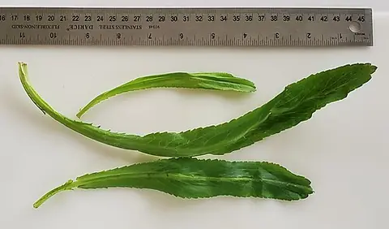
CulantroAll year Curry leavesAll year
Curry leavesAll year FishwortMar–Jul
FishwortMar–Jul Indian pennywortJun–Oct
Indian pennywortJun–Oct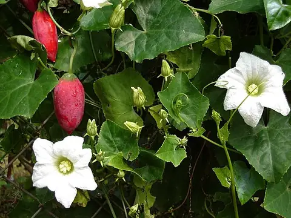
Ivy gourdMar–Nov Khejri (sangri)Mar–May
Khejri (sangri)Mar–May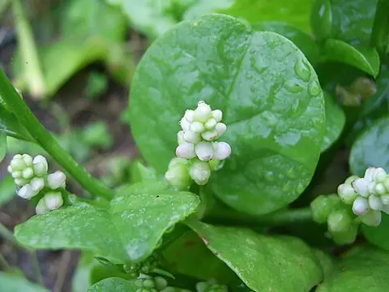
Malabar spinachJun–Nov MoringaAll year
MoringaAll year PurslaneMar–Sep
PurslaneMar–Sep Sessile joyweedAll year
Sessile joyweedAll year Sickle sennaJun–Aug
Sickle sennaJun–Aug Spiny amaranthJun–Oct
Spiny amaranthJun–Oct Spiny gourdJul–Sep
Spiny gourdJul–Sep Stinging nettleFeb–Nov
Stinging nettleFeb–Nov Water spinachJun–Nov
Water spinachJun–Nov Wild banana flower & stemAll year
Wild banana flower & stemAll year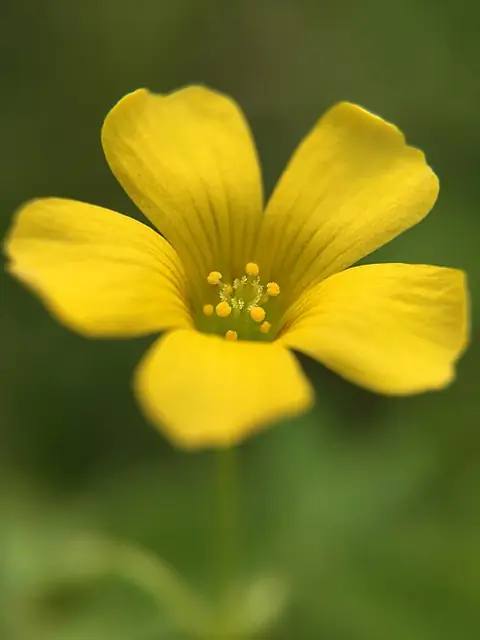
Wood sorrelJun–Feb
Fruit
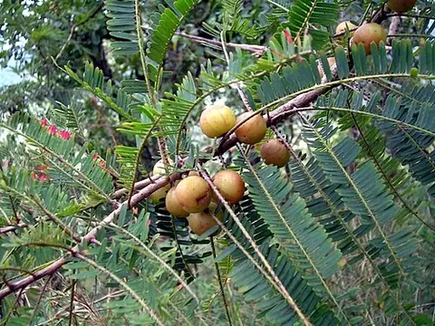
AmlaNov–Feb BaelMar–Jun
BaelMar–Jun BerDec–Mar
BerDec–Mar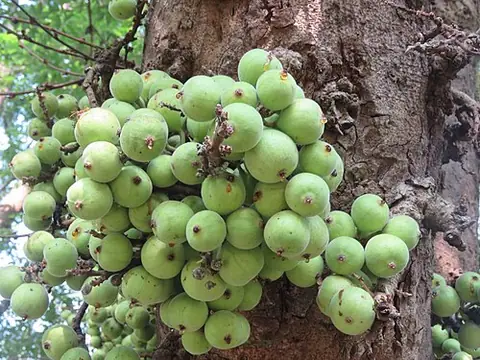
Cluster figMar–Aug Elephant appleOct–Jan
Elephant appleOct–Jan Feral guavaAug–Dec
Feral guavaAug–Dec GhainJul–Aug
GhainJul–Aug HisaluApr–Jun
HisaluApr–Jun Hog plumAug–Nov
Hog plumAug–Nov JamunMay–Jul
JamunMay–Jul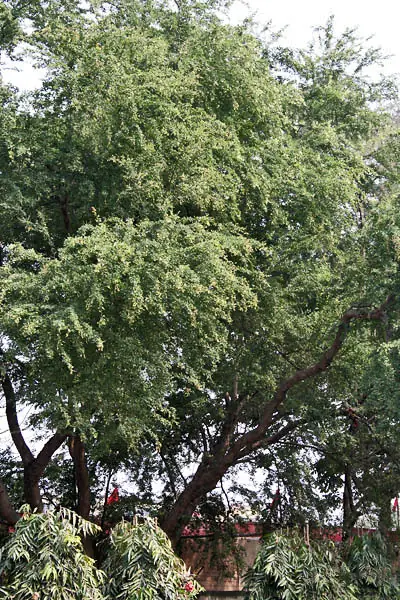
Jungle jalebiMar–May- KachriOct–Dec
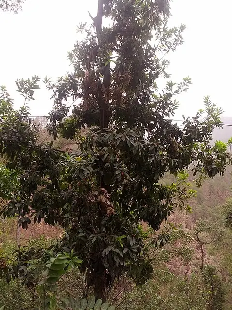
KafalApr–Jun KarondaJul–Sep
KarondaJul–Sep KenduApr–Jun
KenduApr–Jun KerApr–Jun
KerApr–Jun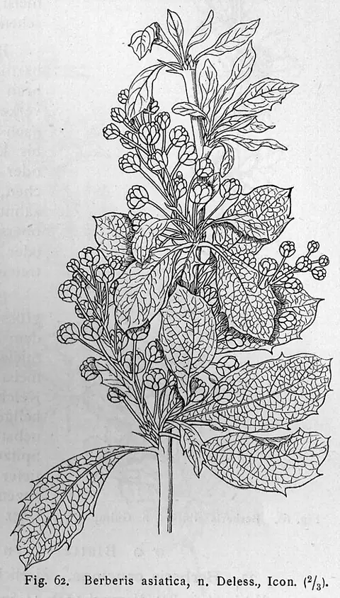
KilmoraMay–Jul KokumMar–May
KokumMar–May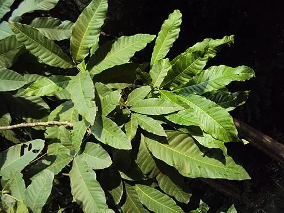
KusumMay–Jul LasodaApr–Jun
LasodaApr–Jun Malabar tamarindJun–Aug
Malabar tamarindJun–Aug MatiraAug–Oct
MatiraAug–Oct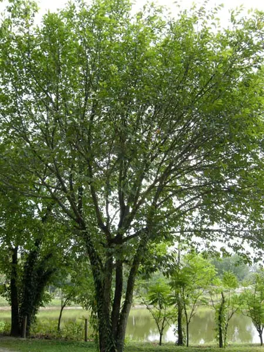
Monkey jackJun–Aug MulberryMar–May
MulberryMar–May Palmyra palmApr–Jan
Palmyra palmApr–Jan PeeluMay–Jun
PeeluMay–Jun SeabuckthornAug–Oct
SeabuckthornAug–Oct- SohiongSep–Oct
 TamarindJan–Apr
TamarindJan–Apr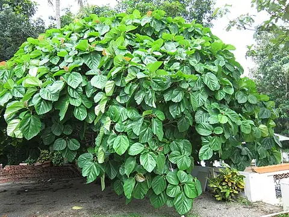
TimlaMay–Aug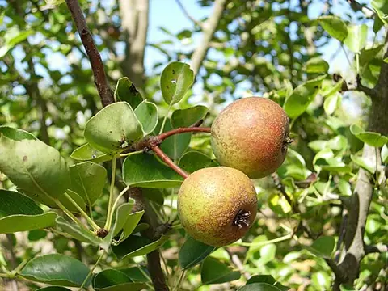
Wild Himalayan pearOct–Dec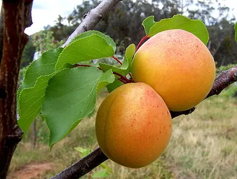
Wild apricotJun–Jul Wild custard appleAug–Nov
Wild custard appleAug–Nov Wild date palmMay–Jul
Wild date palmMay–Jul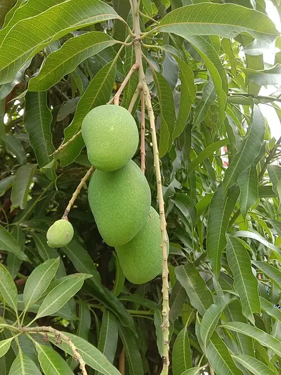
Wild mangoApr–Jun Wild phalsaMay–Jun
Wild phalsaMay–Jun Wild pomegranateSep–Oct
Wild pomegranateSep–Oct Wood appleOct–Mar
Wood appleOct–Mar
Roots & shoots
 Bamboo shootsJun–Sep
Bamboo shootsJun–Sep Cane shootsJul–Sep
Cane shootsJul–Sep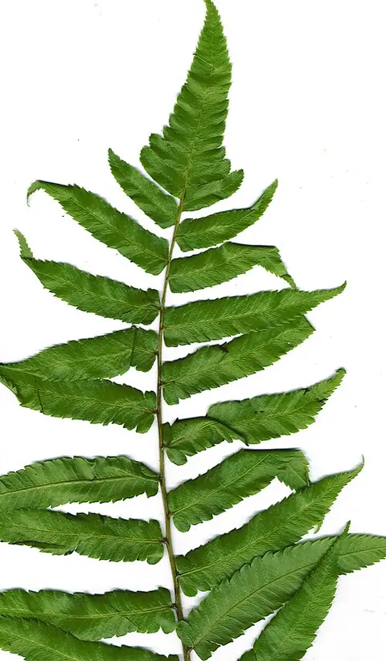
Fiddlehead fernMar–Aug Jambu (Himalayan wild onion)Jun–Aug
Jambu (Himalayan wild onion)Jun–Aug Lotus stem & seedsOct–Feb
Lotus stem & seedsOct–Feb Palm tuberDec–Jan
Palm tuberDec–Jan TikhurDec–Feb
TikhurDec–Feb VidarikandNov–Feb
VidarikandNov–Feb Wild asparagus shootsJun–Aug
Wild asparagus shootsJun–Aug Wild elephant foot yamNov–Mar
Wild elephant foot yamNov–Mar Wild taro cormsOct–Feb
Wild taro cormsOct–Feb Wild yamOct–Feb
Wild yamOct–Feb
Grains & pulses
 Bamboo riceMar–May
Bamboo riceMar–May BhuratSep–Oct
BhuratSep–Oct Jungle riceSep–Nov
Jungle riceSep–Nov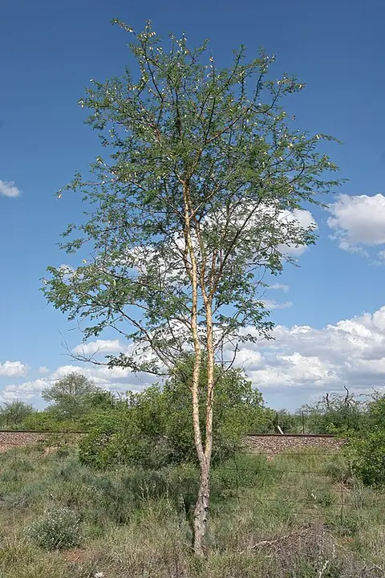
KumatNov–Jan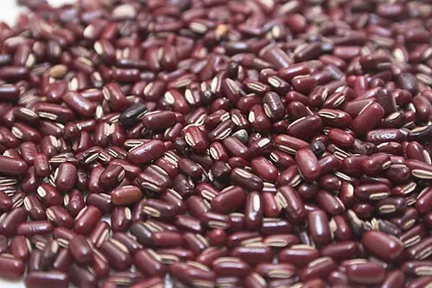
Rice beanOct–Dec Siali seedsMar–May
Siali seedsMar–May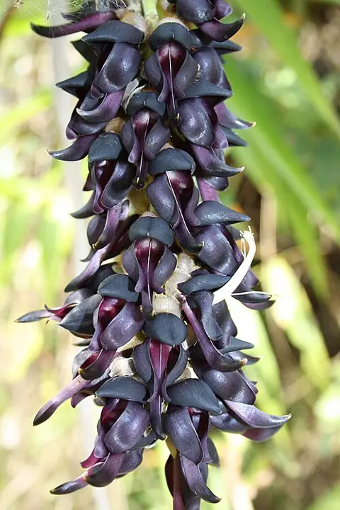
Velvet beanNov–Feb Water lily seedsOct–Jan
Water lily seedsOct–Jan Wild mungOct–Dec
Wild mungOct–Dec Wild riceOct–Dec
Wild riceOct–Dec
Starchy foods
 JackfruitMar–Jul
JackfruitMar–Jul Water chestnutOct–Dec
Water chestnutOct–DecProtein
 Clams & shellfishOct–Mar
Clams & shellfishOct–Mar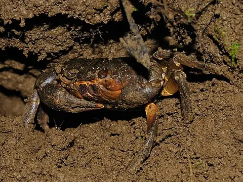
Paddy crabsJul–Oct Paddy snails & small fishJul–Nov
Paddy snails & small fishJul–Nov Red ant chutneyAll year
Red ant chutneyAll year Tree beanNov–Mar
Tree beanNov–Mar
Nuts & seeds
 Cashew apple & nutMar–May
Cashew apple & nutMar–May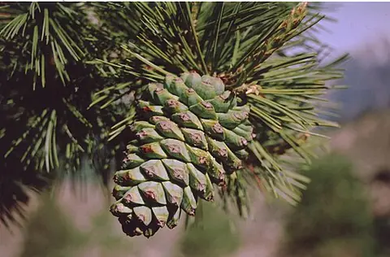
Chilgoza pine nutsSep–Oct ChironjiApr–May
ChironjiApr–May Indian almondJul–Dec
Indian almondJul–Dec MakhanaAug–Oct
MakhanaAug–Oct WalnutSep–Oct
WalnutSep–Oct
 Agathi flowers & leavesOct–Feb
Agathi flowers & leavesOct–Feb BuranshFeb–Apr
BuranshFeb–Apr Kachnar budsFeb–Apr
Kachnar budsFeb–Apr MahuaMar–Jun
MahuaMar–Jun Neem flowersMar–Apr
Neem flowersMar–Apr PhogMar–Apr
PhogMar–Apr Wild honeyMar–May
Wild honeyMar–May